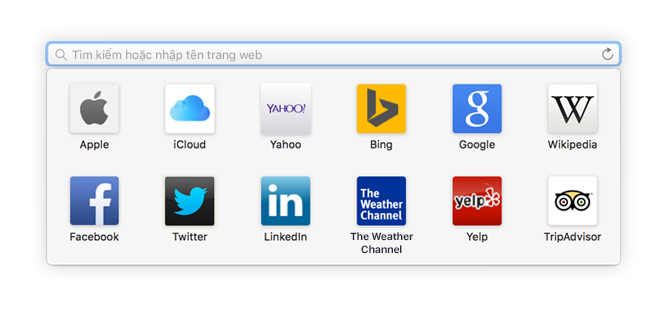
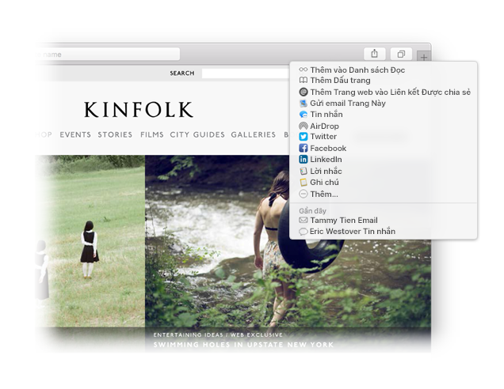

Tìm một mục ưa thích.
Bấm vào trường Tìm kiếm Thông minh để truy cập các trang web ưa thích của bạn. Bấm vào một trang web để truy cập.

Ghim một trang web.
Kéo tab sang bên trái để ghim một trang web và trang web đó vẫn nằm trong thanh tab.

Chia sẻ một liên kết.
Bấm vào  để gửi một liên kết bằng email hoặc văn bản, chia sẻ liên kết đó trên Facebook hoặc Twitter hoặc thêm liên kết đó vào Ghi chú.
để gửi một liên kết bằng email hoặc văn bản, chia sẻ liên kết đó trên Facebook hoặc Twitter hoặc thêm liên kết đó vào Ghi chú.